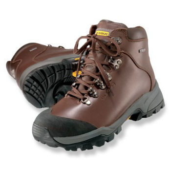

For trekking in the Alps and Pyrenees, you will need:
You will not need:
You might also find useful:
In principle, you should be in good physical shape before you arrive in the mountains. In practice, there's only so much you can do if you live at sea level and work behind a desk all day.
Hiking is an endurance sport. Heart rates range from 100 to 160 depending on the terrain. You can prepare by running, swimming, cycling or rowing.
Don't try to do too much in the first couple of days; any more than eight hours will be hard work. You will be amazed how your condition improves, particularly through the first week.
Start early to take advantage of the morning shade. It's a great feeling to reach the first col of the day in good time.
Call ahead to reserve accommodation. You will be more relaxed knowing that there is a meal and a bed waiting for you at the end of the day. This is essential in peak season.
Eat and drink regularly. You will be burning a lot of calories and you will bonk if you don't eat. I recommend PowerBars, dried fruit, and trail mix (sultanas, currants, nuts, and M&Ms). Chocolate, bread, cheese and yoghurt can be a hassle. I eat a big dinner and graze during the day.